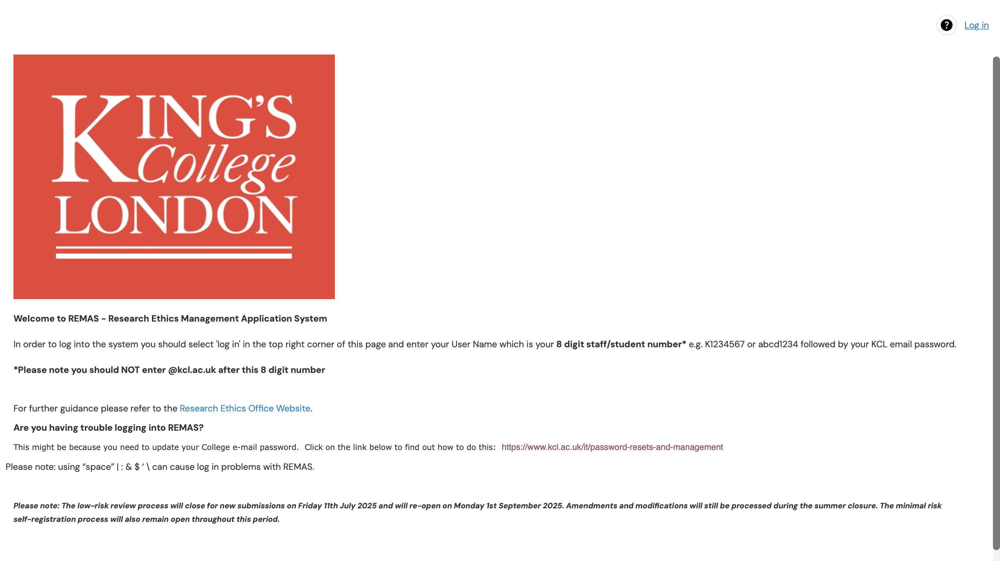
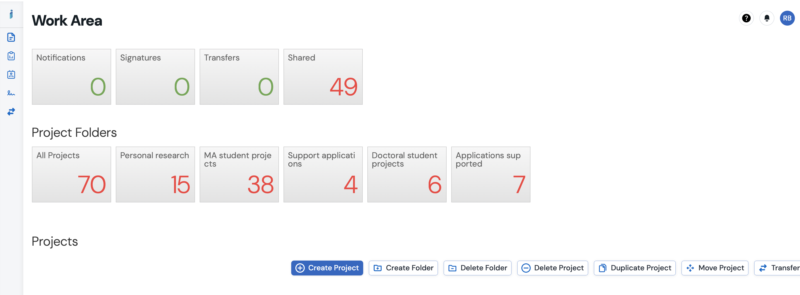
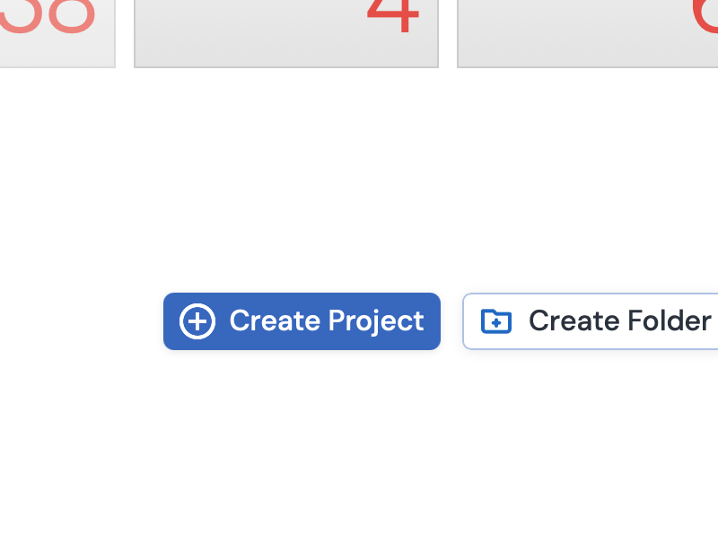
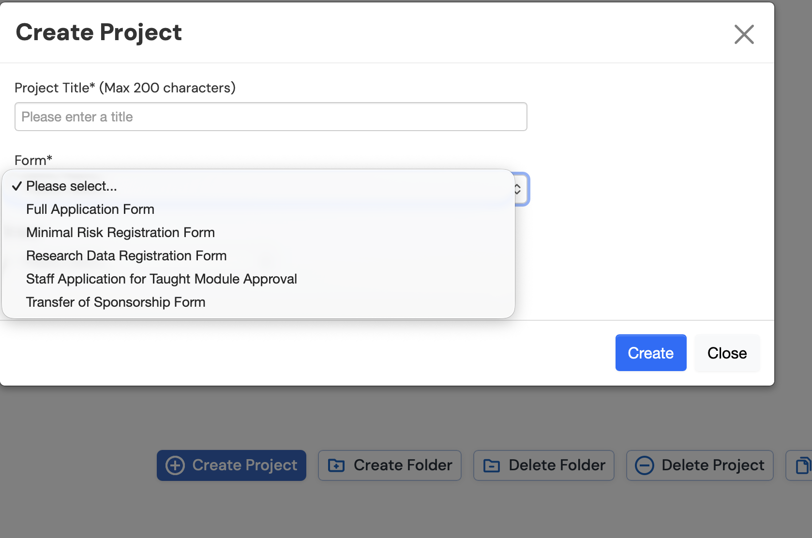

Warning: package 'knitr' was built under R version 4.5.2ECS_Ethics
ECS Ethics support material
These pages provide support and guidance for ECS staff and students on completing the KCL ethics procedure.
Completing an ethics application
Ethics applications are completed through the Research Ethics Management Application System (REMAS). To log into the site, enter your k number (without the @kcl.ac.uk part) and your normal password.

You will then be able to see your work area, where you can write and amend your applications:

To create a new application, you click on create project. The type of project you create depends on the level of risk of your application.
Determining the level of risk
At KCL ethics applications are categorised into three levels of risk, you can see the criteria for the three levels in the table below.
To start a new application, click on the create project button.

If your project is low or high risk, please select a full application form. If your project is minimal risk, please select a minimal risk project:
{fig-align=“center”, width=“1678”}
Note that some types of secondary data analysis required ethical approval - to determine if a project needs ethical approval, you can us the flowchart below:
The time taken for different forms of applications is given below, please plan accordingly:
| Level of Risk | Review Process | Time | Notes |
|---|---|---|---|
| Minimal | Reviewed by supervisor | Within 48 hours | Modification requests take 3 working days |
| Low | Review by ethics panel member | 18 working days | The 18 days do not include time for amendments |
| High | Review by high risk subcommittee | Social Sciences Humanities and Law (SSHL) committee meets most months | The times of the committee meetings can be found here under ((SSHL)[https://internal.kcl.ac.uk/innovation/governance-ethics-integrity/research-ethics/calendar]) |
Level of risk for classroom observations
Minimal risk applications
A common feature of educational research studies is classroom observation. The flow chart below sets out the level or risk of different types of observation/
Recruitment document templates
You can find recruitment document templates on the ethics office website. (Recruitment documents)
Example REMAS applications
Minimal Risk
Minimal risk applications
• An example minimal risk application
• Associated documents
Low Risk
Low Risk: Ethnography
Low risk ethnography
• An example low risk application
• Associated documents
Consent forms
Information sheets
Advertisements
Gatekeeper letter
Indicative instruments
Low Risk: Focus Groups and interviews
Low risk focus groups and interviews
• An example low risk application
Consent forms
Information sheets
Advertisements
Gatekeeper letter
Indicative instruments
Low Risk: Observations and surveys
Low risk observations and surveys
• An example low risk application
Consent forms
Information sheets
Advertisements
Gatekeeper letter
Indicative instruments
High Risk
High risk
• An example high risk application
• Associated documents
• Guidance on distress protocols
Simplified recruitment documents for children
Recruitment documents for 3-6 year olds
• For 3-6 year olds
Guidance on completing sections
B9 Method
B9 Method
You must make this section detailed and logically ordered. Describe each method you will use and give details so that someone who is not familiar with your project can understand your method. Give details. If you are doing interviews, how many? How long will they be? Will they be structured or unstructured? Do mention if you will audio record Etc. Check you have described all the methods in the list B8
For example: The study will consist of six semi-structured interviews with headteachers. Once the headteachers have given consent, we will arrange a mutually convenient time to meet and I will ask the headteacher to choose a convenient location that offers sufficient privacy, for example, a room at school. I have prepared a list of questions that I will ask (see attachment, indicative questions) but I may add additional probes to follow up on issues arising. I expect each of the six interviews to last 30-45 minutes. The interviews will be audio recorded and transcribed. Following transcription I will email the transcripts to the headteachers for a participant check.
C4 Approaching participants
C4 Approaching participants
This section is often not done in enough detail. An extended section of writing is expected here. If there are gatekeepers, these should be approached before contacting potential participants. Describe how you will obtain the contact information of potential participants. Describe what information will be sent to participants. For example:
I will identify schools that a) run after school science clubs and b) are in greater London, through a web search. I will initially approach five schools in this list starting with those closest to KCL, via the public email addressees they give on their websites, and, if I get no response, will approach further schools.
I will email the gatekeeper letter to the headteacher of the five schools. Once I get a positive response, I will ask the headteacher to forward the teacher approach message to the teacher who leads the science club. I will ask the headteacher not to inquire who participates in the project. If any teachers agree to participate I will email an information sheet and consent form.C5b Relationships with participants
C5b Relationships with participants
Be honest about prior relationships – if you have worked with participants in some capacity before, be open about that. In C5b describe how you will mitigate any perceived pressure to participate. For example, you will emphasise that participation is voluntary, you will clearly describe the project and emphasise that the decision to participate or not will not impact your relationship
C6 Gatekeepers
C6 Gatekeepers
There will almost certainly be a relevant gatekeeper in your work. A gatekeeper is someone who stands between the researcher and a potential participant. This is often the head of the organisation that employs a potential participant. For example, for a teacher in a school or the headteacher, or for a charity worker, the head of their NGO. For C6a – by definition the gatekeeper is almost certainly in a position of influence or authority.
C6b Detailed discussion is required here. How will the identity of the participants be hidden from the gatekeepers during recruitment? How will you ensure a gatekeeper can’t identify participants in the final report? What data will you share with the gatekeeper? How and when will you emphasise the voluntary nature of participation?
For C6c – it is good practice to keep the identities of participants hidden from gatekeepers. This can be challenging to achieve in practice but describe how you will attempt to retain participants anonymity. Consider how you control the gatekeepers’ access to the data and the published findings to protect your participants’ anonymity. A simple, via an email message is acceptable here. But please include the gatekeeper approach message as an uploaded document. See the examples in the sample applications.
For C6d - Potential strategies here include: hiding the identities of participants from gatekeepers, ensuring that no performance management/ assessment decisions will be linked to participation or comments, and suitable anonymisation/pseudonymisation of transcripts to avoid revealing the identity of participants.
Data Protection
Data Protection
If you are making recordings, don’t forget to tick the box for recordings
Consent Forms
Consent Forms
• Use the template on the research office website
• If carrying out audio recordings do include the appropriate tick box
• Do not state you can guarantee anonymity if gatekeepers or other participants (for example, in a focus group) will be aware of the identities of participants.
• Do include specific dates (i.e. the 12th of April 2019) for when participants can withdraw their data from the study.
• Produce a separate consent form for each method a participant will be involved in
• If data will be shared with a transcription service, ask for consent for the (anonymised) data to be shared
Information Sheets
Information Sheets
• Use the template on the research office website
• Ensure the language is clear and appropriate for participants. Remove any unnecessary terminology.
• Proof read the sheet!
• Describe what participation will involve in detail – e.g. how long will the interview be? Where will it take place? etc.
• Do include specific dates (i.e. the 12th of April 2019) for when participants can withdraw their data from the study.
• Be honest about the burdens of participating and don’t oversell the benefits.
• State how long the data will be retained for. The KCL data policy suggests data is retained for 1 year after the completion of minimal risk unfunded studies and for four years after the completion of low risk unfunded studies.